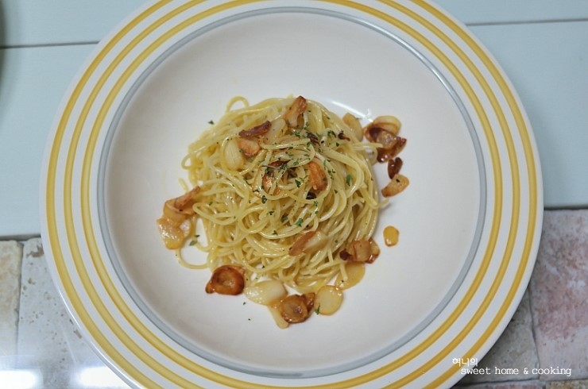

알리오 에 올리오 파스타
마늘과 올리브유를 핵심으로 만드는 가장 기본적인 이탈리아식 파스타

정보
재료
- 스파게티 200g
- 물 1000 mL ~ 2000 mL
- 통마늘 6~8개(편썰기 또는 다지기)
- 올리브오일 6~8큰술(팬 바닥을 넉넉히 채울 정도)
- 페페론치노(매운 고추) 4~6개(잘게 부수기)
- 면수 1컵
- 약간의 소금 및 후추
만드는 순서
- 면 삶기
- 마늘 오일 만들기
- 면과 유화시키기
- 소금, 후추 간 맞추기
더 알아보기: 나무위키 알리오 에 올리오
이 페이지는 GitHub Pages 로 공개했습니다.